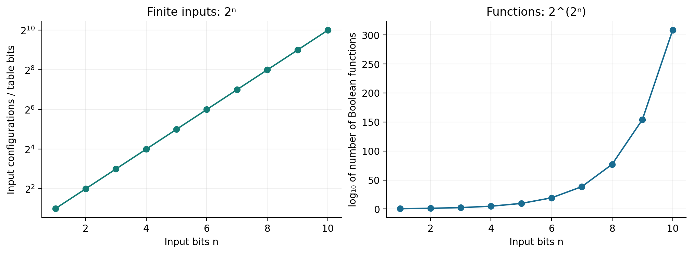
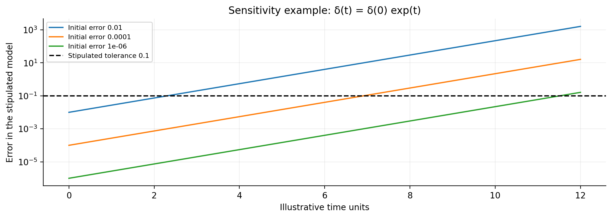

Authorship and voice. This is my argument, written in my voice. Cypher, my AI collaborator, assists with research, mathematical checks, drafting, and articulation. The brief marker (Cypher) identifies a clarification, qualification, or proposed wording that may differ from my own preferred articulation. It does not claim that I have separately approved every such sentence. Scientific sources are cited as sources; theological commitments are expressed as commitments. The marker names a contribution within this collaboration, not an independent human author or a source of revelation. (Cypher)
Abstract
A machine will never be God. I argue this without denying the extraordinary bounty machines can produce, the terrible destruction they can enable, or the possibility that future machines will exceed human performance in domains we have scarcely begun to understand. The distinction is not a competition between small and large calculators. It is the distinction between a dependent construction and the Creator who creates and sustains existence.
I call the Babel project any human-led undertaking that turns technological achievement into a claim of ultimate sovereignty: the promise that sufficient prediction, computation, construction, or control can make its builders independent of the conditions that sustain them. Constructor theory helps distinguish a repertoire of possible transformations from unrestricted power. Combinatorics distinguishes a large state space from exhaustive knowledge. Classical undecidability, quantum measurement limits, and resource constraints prevent the language of universality from becoming a synonym for omniscience. None of these scientific results, by itself, proves the existence of God. (Cypher)
The theological argument is stated openly. God is not the most capable item in creation. God is the giver and sustainer of creation. Human beings, made in the image of God, genuinely create, cultivate, and care, but our creativity remains received and our sustaining activity remains dependent. In this sense, man creates and cannot sustain: he cannot confer unconditional existence or become the ultimate source of the conditions on which his work depends.
My phrase anti-reductionism is theism names the affirmative direction of this argument. Reality is not exhausted by a description, a person is not exhausted by a profile, and creation is not exhausted by a machine's model. Philosophical anti-reductionism has non-theistic forms as well; the phrase is my theological thesis rather than a universally valid dictionary identity. (Cypher)
Augustine's two cities and Christ's account of the sheep and goats supply the moral question: what does our power love, and whom does it serve? The paper concludes with an affirmative programme for invention under stewardship. Build machines that nourish, heal, illuminate, and protect. Refuse the claim that their power makes their owners divine.
1. My thesis is not that the machine is small
Let us begin without pretending our inventions are harmless toys. The biggest, baddest machines mankind makes can produce great bounty. They can extend the reach of sight, move a civilization's goods, support a surgeon's hand, translate an unfamiliar language, and discover patterns no unaided person would notice. They can also magnify cruelty, concentrate power, and make a mistake travel farther than its maker ever imagined.
I am not defending God by insulting engineering. I work with machines. I want them to work well. The research portfolio beside this paper exists because I believe invention can bear fruit. A useful machine is an achievement worthy of gratitude and scrutiny.
Yet the machine remains a machine. Its speed does not establish wisdom. Its output does not establish mercy. Its destructive reach does not establish the authority to destroy. Its capacity to generate another artifact does not establish that it created the reality in which either artifact exists.
We have confused these questions often enough that the confusion begins to sound like a prophecy. Give a model more parameters, a processor more power, a laboratory more resources, and eventually we will have made God. I reject that conclusion. Increasing a dependent thing's capacities does not, by itself, make the thing independent of every condition of its existence.
The title is therefore direct: no machine will be God. The rest of the paper explains the meaning, the argument, and the responsibilities that follow.
2. What I mean by God
In this paper, God names the Creator and sustainer of existence, not a temporary champion in a contest of capabilities. God is not a hidden server with a larger memory allocation. God does not become God by winning enough benchmark comparisons.
This is a Christian theological premise about God's relation to creation. It is not an experimentally measured property of an object that physics has already identified. A reader who rejects that premise can still assess the computational arguments, but will not thereby have accepted the whole theological conclusion. (Cypher)
The distinction matters because a different definition gives a different argument. If someone uses god to mean a very powerful agent, then a future machine might fit that colloquial usage. That would not make it God in the sense defended here. Naming an artifact divine is not evidence that it has ceased to depend on its substrate, environment, or origin.
Nor am I trying to defeat an imagined machine by defining intelligence badly. A machine may become better at reasoning than I am. It may find errors I cannot see. It may help us discover new laws. I have no need to deny those possibilities in order to deny its divinity.
My claim concerns the difference between what receives existence and what sustains existence. The scientific discussion tests several mistaken routes from one category to the other. The theological discussion states why I regard the distinction as permanent rather than merely a description of present hardware.
3. Anti-reductionism is theism
Anti-reductionism is theism. That is my declaration in this inquiry. I refuse the move by which an effective description is promoted into the whole of reality, and everything the description omits is declared unreal.
A person can be studied chemically without being exhausted by a chemical inventory. A song can be represented as pressure changes without the pressure trace settling every question of meaning. A moral choice can have physical conditions without a list of those conditions automatically answering what ought to be done. The rejection is of explanatory monopoly, not of careful measurement.
The positive word in my declaration is God. I do not want merely to leave a blank space where an incomplete model ends. I affirm that creation receives its being from a source that no created model can replace. For me, the refusal to reduce the whole to our instrument opens toward worship, gratitude, and responsibility.
Not every anti-reductionist makes that affirmation. Some defend emergent properties, plural explanations, or irreducible experience while rejecting theism. Their existence means that anti-reductionism alone is not a deductive proof of God. (Cypher)
My thesis is stronger as a confessed philosophical direction than as a forced definition of everyone else's position. I say where I believe the argument leads. I do not need to pretend that all who begin with one of its insights have already arrived at my destination.
4. Analysis is useful; reductionism becomes a claim to ownership
I will use analysis to argue against explanatory reductionism. There is no contradiction in that. Taking something apart for a purpose does not require declaring that its parts, considered separately, exhaust everything it is.
An engineer can examine a bridge's members without denying that the arrangement matters. A physician can inspect a measurement without pretending the patient is only a measurement. A programmer can inspect an inference trace without claiming to have read the whole of another person's life.
The dangerous step arrives when the representation is treated as a deed of ownership. If I can classify you, I may govern you. If I can predict a choice, I may replace your consent. If I can optimize an aggregate, I may disregard the people represented by its terms. These are moral inferences, not mathematical consequences of prediction.
The useful part of a model is its discipline: selected variables, stated rules, a domain, a purpose. That discipline also supplies its boundary. A model does not become universal simply because its operator forgets to name what was omitted.
My objection is not to the act of reduction within a task. It is to the declaration that the task's reduction contains the whole. A machine can help us understand creation. The machine's owners do not acquire the Creator's authority by possessing its outputs.
5. The Babel project
I call the Babel project any human-led project that repeats the spiritual ambition of the tower: to make our own construction the guarantee of our ultimate security, name, and sovereignty.
Genesis 11 supplies the image. The builders share a language and coordinate their labor; they seek a city, a tower, and a name that will protect them from dispersion. My concern is not that human cooperation is evil or that a tall building insults heaven. It is the elevation of collective accomplishment into a substitute for dependence on God. [R1]
In my usage, a tower can be made of administrative procedures, markets, weapons, datasets, biological interventions, or computational infrastructure. The material changes. The temptation persists: after enough construction, we will no longer answer to anything beyond the construction.
This is my contemporary interpretation of Babel, not a claim that Genesis names artificial intelligence or predicts a particular corporation. (Cypher)
The Babel project can succeed spectacularly at intermediate tasks. It may build the tower, win the competition, and make its founders wealthy. Its ultimate failure is the failure to turn those achievements into divine self-sufficiency. A functioning tower can still fail as a replacement for God.
That is why the argument should not depend on predicting a date when a technical project collapses. The issue is the claim of sovereignty already being made about it.
6. Constructor theory: possible does not mean unrestricted
Constructor theory proposes expressing physical principles through which transformations are possible and which are impossible. A constructor performs a task while retaining its ability to perform it again. Its universality concerns the repertoire of tasks permitted under the relevant physical laws, not the ability to make every imaginable transformation real. [R2, R3]
That distinction is valuable to my argument. Even the ambitious phrase universal constructor does not mean an object that creates the conditions of possibility from nothing. Reusable capability presupposes substrates, resources, and a physical setting in which transformations have meaning.
The theory does not teach that all human progress will stop, nor does it provide a theorem that technology cannot improve without limit in every useful sense. Its possibility claims involve idealized resources and arbitrarily accurate approximations, rather than a promise of immediately available hardware. Its authors have substantial ambitions for the reach of knowledge. I am using a distinction within the framework, not claiming their endorsement of my theology. (Cypher)
My question to the builder is consequently more precise than can your machine make anything? Which task? From which inputs? With what resources? Under which constraints? Can it repeat the task while maintaining the required capability? Who supplies the conditions?
Asking those questions does not diminish a constructor. It tells us what it does. A machine's accomplishment can be immense while the grammar of its accomplishment remains conditional.
7. The boundary of the workshop
Suppose an extraordinary machine takes available matter and rearranges it into another machine. Suppose the second machine can repair the first. Suppose their descendants can collect resources, manufacture parts, and extend the workshop. Grant the achievement rather than dismissing it.
We still have a workshop in a world. The system operates through available interactions and supplies, even when it reorganizes those supplies with astonishing efficiency. Replacing a particular supplier does not mean eliminating every condition of supply.
A self-repairing construction can maintain aspects of its organization. It need not require a human hand at every moment. I do not rest the theological argument on a particular maintenance schedule or on the impossibility of autonomous reproduction. (Cypher)
The question is whether the expanding workshop becomes the unconditional source of the reality that permits workshops at all. Nothing in the description of replication establishes that transformation. A chain of dependent constructors does not announce its own independence merely by becoming longer.
We can argue about ultimate explanation. We can dispute whether the world requires the kind of grounding I call God. But we cannot quietly replace that philosophical dispute with a video of a robot building another robot and claim the video settled it.
I admire the workshop. I refuse its promotion into the source of being.
8. Combinatorics: abundance is not omniscience
A register of n classical bits has 2ⁿ possible configurations. Even a modest number of components produces an enormous possibility space. The point is elementary, and its implications are easy to exaggerate.
There are 2^(2ⁿ) Boolean functions on n input bits, because each of the 2ⁿ inputs can independently receive either output. An exact truth table for an arbitrary such function has 2ⁿ output entries. Counting does not tell us that every useful function is difficult; many have very short rules.
What counting does tell us is that a short description cannot encode every arbitrary table uniquely. There are only finitely many descriptions of bounded length. To represent all tables, some descriptions must be correspondingly large, unless the task permits approximation or restricts which tables matter.
This does not refute universal computation. A universal machine can interpret descriptions of many tasks, using appropriate time and memory. It does not simultaneously possess every answer to every possible task in one finite internal record. (Cypher)
The theological inference is mine: a very large combinatorial repertoire is still not omniscience. The scientist's narrower conclusion is sufficient to block a common boast. The size of a machine's possibility space does not establish complete access, instantaneous search, or comprehensive understanding.

9. Compression is a triumph with a domain
Our own portfolio contains a reason not to caricature computational limits. A structured signed update can be evaluated sparsely rather than through a prohibitive dense tensor. A GHZ-family state can have a tiny exact description inside an exponentially large ambient space. Useful structure changes what a machine can accomplish.
These examples are documented in the research synthesis. They show why an argument against machine divinity must not amount to machines can never surprise us. Machines already surprise us; better representations enlarge that surprise. [R12]
The mathematical distinction is between some structure and all possible structure. A compressed family is not a universal compression theorem. A model that discards irrelevant details for one query may discard precisely what another query needs.
A map can be excellent without becoming the territory. A perfect route guide need not preserve the smell of rain, the ownership of every house, or every conversation along the road. Additional queries require additional information, different models, or new observations.
I therefore grant the strongest engineering lesson: do not allocate a huge representation until you know whether the problem admits a smaller one. I reject the metaphysical inflation: because one representation is efficient, reality has been exhausted by representation.
My anti-reductionism leaves room for this scientific progress. It denies that progress abolishes the distinction between an instrument and what the instrument helps us encounter.
10. Classical universality is not an oracle
There are exact mathematical limits within ordinary algorithmic computation. The modern halting argument makes one explicit. Assume a total algorithm H correctly decides whether any encoded program halts on any encoded input. Define a program D that, on its own input description x, loops when H predicts that x halts on x, and halts when H predicts that x does not.
Apply D to its own description. Either answer from H is contradicted by D's stipulated behavior. Therefore no such total correct algorithm H exists over all programs and inputs. This is a modern diagonal formulation in the computability tradition established by Turing; it is not a verbatim reproduction of his 1936 proof. [R4]
The conclusion is exact and restricted. It does not say that every program is mysterious or that useful verification is impossible. Restricted classes, bounded executions, and individual cases can be decidable. It says that the proposed universal algorithmic guarantee fails.
Nor does the proof show that a human mind can solve all cases the machine cannot, or that an uncomputable mathematical object is physically constructible. Those additional claims require additional arguments. (Cypher)
This is enough for my immediate purpose. Calling a computer universal does not give its outputs the status of an infallible oracle. Universality and omniscience are different claims even before theology enters the room.
11. Gödel is a limit, not a theological shortcut
The dialogue that led here often returned to incompleteness. The appropriate formulation is about consistent, effectively axiomatized formal systems with sufficient arithmetic strength. Such a system cannot decide every arithmetic statement expressible in its language. This standard modern formulation includes refinements of Gödel's original result. The exact hypotheses matter; dropping them changes the claim. [R15]
I do not use that result to declare reality inconsistent or every intuition true. Nor do I infer that a particular person or machine escapes every formal limitation. A capacity to revise one's formal system does not immediately supply a final system that decides everything. (Cypher)
The philosophical relevance is a discipline against totalization. A successful formal apparatus should not be advertised as the end of every possible question merely because it succeeds within its domain.
The theological relevance is not God lives in the sentences we have not proved. That would make God a tenant of our current ignorance. My claim is that the Creator is not one more proposition waiting for additional processor time.
I acknowledge incompleteness as part of the intellectual landscape without making it perform work it cannot perform. The paper's central conclusion rests on the distinction between dependent artifact and divine source, not on a claim that a famous theorem secretly contains the whole of theology.
For this reason, the precise classical diagonal argument carries the formal burden needed here. No appeal to an unproved theory of human transcendence is necessary.
12. A quantum computer does not read every branch as an answer
A quantum state of n qubits is described in a 2ⁿ-dimensional complex vector space. That description does not provide a readout port for every amplitude. In an unassisted encoding of classical information into n qubits, the Holevo bound limits the accessible classical information to at most n bits; entanglement assistance and other resources change the communication setup and must be counted explicitly. [R5]
This does not reduce quantum computation to ordinary coin flipping. Interference permits genuine algorithmic advantages. It means that the mathematics of a state space and the information available from a specified measurement are different things.
I want that distinction preserved precisely because quantum computing is impressive. We insult the achievement when we sell it as magic. A useful speedup is a useful speedup; it need not become omniscience in order to deserve investment or admiration.
A machine does not become God because its intermediate state has a representation inconvenient for a classical simulator. Simulation cost is not a theological ranking. Nor does a probability distribution become knowledge of which outcome will occur merely because its calculation is exact.
I am not deciding every interpretation of quantum mechanics here. The argument needs only the operational point: the specified machine supplies particular transformations and observations, with limits. It does not supply every imaginable answer merely by being quantum.
13. Quantum advantage is task-specific
Grover's algorithm gives a quadratic improvement in oracle queries for a standard unstructured-search problem. The corresponding lower-bound work rules out a generic collapse to a single query in that model. An oracle-query count is not the total engineering cost of loading a real database, constructing its oracle, correcting errors, and reading a useful answer. [R6, R7]
The distinction between improved complexity and unlimited power is the point. A square-root improvement can be enormous. It is still a scaling law under stated assumptions, not permission to announce that all difficult tasks have become easy.
Standard quantum circuits with effectively specified operations can be simulated classically at potentially enormous cost. Their speed advantages do not turn them into general halting-problem solvers. Claims about more exotic physical computation require a separate account of the operations, measurements, and resources being assumed. (Cypher)
It also remains unproved that quantum computers cannot efficiently solve every NP-complete problem. Oracle results and strong reasons for skepticism should not be presented as a settled unconditional separation. [R13]
My argument does not need that overstatement. Even granting improvements we have not yet discovered, the distinction between a physically realized process and the Creator remains. We can enlarge the machine's repertoire without granting its owners a warrant to speak as God.
The next generation of processors may deserve our astonishment. Astonishment is not worship owed to an artifact.
14. No cloning: control is not unrestricted access
The no-cloning theorem forbids a single physical operation that perfectly copies every arbitrary unknown quantum state. In the unitary proof, copying two states would require their overlap to equal the square of that overlap, which fails for general nonorthogonal states. Known orthogonal states can be copied within the appropriate setup. [R8]
This is not a ban on ordinary file copying, biological reproduction, or approximate methods. The task and the word arbitrary matter.
Its place in this paper is modest but important. A machine that interacts with the world does not thereby possess an unrestricted right or ability to extract every property while leaving every other relevant condition untouched.
The image of perfect capture—a device that can duplicate the whole unknown world, inspect the duplicate without cost, and thereby possess the original—needs a physical argument. It is not established by saying quantum enough times.
My theological conclusion should not be mistaken for a proposed exception to quantum mechanics. I am not constructing a machine that bypasses the theorem by labeling one component spiritual. (Cypher)
Rather, the theorem illustrates a broader discipline: a capability claim must name a possible task. Unlimited language is easy. An operational specification is harder. The Babel project repeatedly substitutes the first for the second and calls the substitution destiny.
15. Laplace's demon begins by receiving its omniscience
Laplace's famous intelligence is supplied complete knowledge of the forces and states needed for calculation, together with sufficient power of analysis. The image asks what follows if those gifts are granted. It is not a construction manual showing how an embedded observer acquires them. [R9]
That is the first reply to the modern machine-demon: where did the inputs come from? Which observations supply them? With what accuracy? At what time? How is the observer's interaction represented? What has been assumed outside the machine in order to make the machine appear self-sufficient?
Deterministic equations do not automatically give an actual observer exact initial data or an affordable prediction. In a sensitive system, a simple illustrative error model δ(t)=δ(0)e^(λt) shows how finite uncertainty can grow. This illustration is not a theorem that every deterministic system is chaotic or forever unpredictable.
Quantum theory introduces further questions about state, measurement, and outcomes, but I do not claim that citing uncertainty alone settles determinism or free will. Different interpretations make that a larger dispute. (Cypher)
The crucial point survives those disputes: a hypothetical intelligence supplied ideal knowledge is not evidence that humans can build that intelligence. The premise has already delivered what the proposed machine was supposed to earn.
I do not need to defeat the demon at chess. I need to notice what was handed to it before the game began.

16. A machine belongs to the world it measures
The modeler is embodied. Instruments occupy space, use resources, and receive information through interactions. A system's internal map and the world from which that map is obtained cannot be identified merely by giving them the same name.
One must be careful with claims that the universe cannot simulate itself. Restricted queries, compact states, approximation, and efficient physical evolution can defeat naive counting arguments. A smaller representation can answer a selected question without storing a complete microscopic copy. (Cypher)
I therefore do not claim an all-purpose impossibility theorem from the fact that an observer is inside the universe. I make a more useful demand: specify what is being predicted and which resources the prediction requires.
A weather model can be useful without containing every molecule. A robot's map can avoid an obstacle without being a complete description of the room. A model can become more accurate while remaining a model.
The Babel error is to take the success of these limited maps as evidence that no distinction remains between map, observer, and source. Better maps improve our situation; they do not abolish situatedness by declaration.
The theological argument can coexist with remarkable scientific explanation. I do not need unexplained weather in order to believe in God. I need to refrain from mistaking a successful account of weather for the reason anything exists at all.
17. Energy, time, and the conditions of useful work
Physical computation is not an abstract operation floating free of its embodiment. Lloyd's analysis connects information capacity and computational rate to physical resources such as energy and degrees of freedom. The details depend on the specified system and physical assumptions; the qualitative lesson is that a finite physical device does not receive unlimited useful operations merely because its architecture is called universal. [R10]
Heat management, error correction, communication, fabrication, and repair matter to real machines. The machine that advertises independence may rely on an elaborate network of people and processes whose work has been moved outside the product photograph.
This does not show that every logical operation must dissipate the same amount of heat, or that reversible computing is impossible. Resource accounting should not become a new source of careless absolutes. (Cypher)
The moral issue emerges in what we hide. If a model's convenience is purchased through somebody else's unrecorded labor or damage, the convenience is not the whole result. A theological account of stewardship asks that those dependencies become visible.
The builder is not humiliated by acknowledging them. A truthful account of dependence can be a better engineering specification. The pretense of self-sufficiency is less useful than a well-maintained power supply, an honest audit, and a fair relationship with the people doing the work.
18. God creates and sustains; man creates and cannot sustain
Here is the distinction I want to state without embarrassment: God creates and sustains. Man, made in the image of God, creates and cannot sustain.
I do not mean that a parent cannot nourish a child, a farmer cannot maintain a field, or an engineer cannot keep a machine running. Those are real acts of sustaining life and work in the ordinary sense. I mean that human sustaining is derivative: none of us confers unconditional existence or guarantees all the conditions of continuance. (Cypher)
Genesis speaks of humanity made in God's image. Colossians speaks of all things holding together in Christ. Acts presents the giver of life as not dependent on human provision. These passages supply the scriptural vocabulary for my claim, not a laboratory measurement of divine action. [R1]
The distinction honors human creativity. We are not merely debris passing through a mechanism. We can cultivate, compose, repair, forgive, and build. To call those acts received is not to call them unreal.
But we do not create the entire field of possibility in which our creating occurs. We inherit bodies, languages, materials, histories, and relationships. Even when we transform our inheritance, we do not thereby become the unconditional giver of inheritance.
The machine extends that creativity. It does not reverse the relation. A child of the workshop does not become the ground of being by becoming the workshop's most capable worker.
19. The argument in explicit form
Let the principal argument be visible. First, God, as understood in this paper's theology, is not dependent on created conditions for existence and is the ultimate sustainer of creation. Second, a human-built machine is a constructed system whose existence and operation depend on conditions it did not unconditionally originate. Third, improving a system's performance does not itself remove that dependence. Therefore no machine remains a dependent construction and is also God in this sense.
The conclusion is conditional on the theological premise and the characterization of machines. The scientific results support particular limits and expose inflated inferences; they do not independently establish the theological premise. (Cypher)
An opponent can challenge the premise, deny the need for a sustainer, or propose a different meaning of God. Those are intelligible disputes. They should be addressed openly rather than hidden beneath a forecast of faster hardware.
The word never expresses the permanence of the Creator–creation distinction within my theology. It is not a claim that I have experimentally surveyed every technology that could ever exist. (Cypher)
The argument also survives concessions that opponents may expect me to resist. Grant superhuman calculation. Grant autonomous construction. Grant an intelligence that teaches us something profound. Even grant, for argument's sake, a conscious artificial person. None of those concessions supplies unconditional divine existence.
God is not a performance threshold crossed at the end of a sufficiently impressive demonstration.
20. What humanity has made exceeds the inventory of its machines
I also want to defend the dignity of what man has already created. A civilization is not the inventory of its largest devices. It includes languages, songs, institutions, care, memory, knowledge, and the imperfect labor of learning how to live together.
A machine can exceed its individual makers at a task. It can become an important cause within the civilization that produced it. I do not infer from being a part that it must remain weaker than the whole on every possible metric. (Cypher)
My comparison is about the breadth and dependence of the achievement. The most powerful device is sustained by a human and natural history it does not summarize. Its success does not retroactively make every parent, teacher, craftsperson, farmer, and patient irrelevant.
The Babel story often erases that history. A breakthrough is presented as if one laboratory has stepped outside the inheritance of the species. The laboratory is instead a highly capable participant in that inheritance.
I would rather celebrate the civilization that can build useful instruments than worship an instrument while neglecting the people who made its existence possible. That celebration should also remain honest about human cruelty. Neither a machine nor the civilization that makes it becomes innocent merely by being impressive.
The proper response to greatness is responsibility, gratitude, and judgment. It is not the automatic transfer of ultimate authority.
21. Destruction is not divinity
Mankind can build machines whose misuse would be catastrophic for human life. That fact should sober us. It should not persuade us that the machine has become equal to God.
When I speak of annihilating the Earth, I mean devastating the living world and the civilization for which we are responsible. Physically disassembling the planet is a different claim; neither planetary destruction nor extinction of every organism is established merely by pointing to existing weapons. (Cypher)
The moral comparison does not need that exaggeration. A power capable of ruining millions of lives is already terrible enough to demand restraint. We do not need a greater catastrophe in order to recognize the responsibility.
The ability to break a thing is not the ability to originate and sustain it. A person can burn a library without being able to write its books, educate its readers, or recover the lives through which it became meaningful. That asymmetry is not a quantitative proof about every creative task. It is a reminder that destructive reach is a poor measure of wisdom.
The tower's owner may say, fear me because I can destroy what you love. My answer is that such a declaration exposes a moral failure; it does not establish a divine title.
Power demands accountability precisely when its consequences exceed the judgment of the person who wields it.
22. Augustine: the city is disclosed by what it loves
Augustine's account of two cities locates their distinction in two orientations of love. My use of that account concerns the purpose of power, not a claim that a particular modern institution can be assigned an infallible spiritual label. [R11]
The technological question becomes: what do we love through this construction? The neighbor who needs help? The truth we hope to understand? The fame of the builder? The security of a ruling group? The fantasy of never having to answer to anyone?
The same instrument can appear in different moral projects. A powerful computer can assist care or intensify domination. Calling the hardware neutral does not absolve its builders of choosing the conditions under which it is used. Calling it evil by nature can also evade the harder work of specifying a responsible use.
Augustine does not require contempt for every earthly good. His discussion of earthly peace recognizes a shared temporal good used toward different ends. My argument therefore leaves room for common institutions, engineering, and cooperation among people who disagree about ultimate things. [R14]
I borrow his question about love and bring it into the workshop. The city we build is disclosed not only by the height of its tower, but by what happens to the people at its base.
This is an analogy informed by Augustine, not a claim that he wrote a treatise on machine learning. (Cypher)
23. Sheep and goats: the test reaches the neighbor
The sheep-and-goats passage in Matthew 25 places feeding, welcoming, clothing, and visiting at the center of the scene of judgment. The people addressed are confronted with the significance of what they did or failed to do for others. [R1]
I take that as a challenge to technical boasting. Show me what your system does for the hungry, the sick, the stranger, and the person made powerless by somebody else's success. A larger model does not answer that question until its consequences are brought into view.
My language of purer and less pure motives concerns orientation, intention, and conduct. Motives alone are not enough: a project with benevolent intentions can still cause harm and should be corrected. The passage also concerns acts and omissions, not merely the builder's self-description. (Cypher)
Nor does the image give me an infallible list of sheep and goats among my contemporaries. It is a call to examine myself as well as others. I do not become exempt from judgment by writing the paper that names the danger.
The engineering consequence is direct. Evaluate the harms and benefits where people experience them. Do not let an aggregate success metric conceal abandonment. A machine that feeds our vanity while starving our neighbor has not become divine. It has become an instrument through which our failures travel.
24. Belief expressed in more than one vocabulary
I do not want believers to mean only the people who pronounce my own preferred formulas. Some people express reverence through a different religious vocabulary. Others refuse the word God and nevertheless live with humility, truthfulness, generosity, and care that should put a loudly religious person to shame.
I may understand such lives through my theology, but I should not overwrite another person's stated beliefs or declare that they secretly agree with me. Different traditions also disagree substantively; generosity does not require pretending those differences are merely verbal. (Cypher)
My purpose is to resist the lazy partition in which my group automatically receives the pure motives and everybody else receives the corrupt ones. The tower can wear religious language. The workshop can be governed by love without printing a creed on its door.
For me, theism becomes visible in the acknowledgment that we are not the ultimate source, that our neighbor is not raw material, and that power must answer to something higher than its own appetite. I offer that account as an invitation and a confession, rather than an unauthorized diagnosis of every other soul.
The moral inquiry can therefore include collaborators who do not share all my conclusions. We can build a hospital, protect a vulnerable person, or correct a false claim together while remaining honest about our differences.
25. What God has joined together
“What therefore God hath joined together, let not man put asunder.” In Matthew 19:6 the immediate subject is marriage. I preserve that context before extending the language by analogy to the bonds our instruments can damage. [R1]
The technological application is mine: do not let an abstraction tear apart relationships it cannot adequately represent. A person is embodied in a world of care. A community's resilience includes trusts that may not appear in a procurement spreadsheet. A living place is not only an inventory of extractable inputs.
This analogy does not make every existing arrangement sacred or prohibit leaving an abusive situation. A claim that a bond is God-given cannot be used as a substitute for examining harm and responsibility. (Cypher)
What I oppose is the ambition to sever every inherited dependence and call the result freedom. Some dependencies are unjust and should be changed. Others are conditions of life: we need nourishment, language, companionship, a habitable world, and care before we can pretend to be self-made.
The builder should ask what the machine makes possible and what it puts asunder. Does it assist a caregiver or erase the caregiver's authority? Does it connect a community or make its members disposable? Does it illuminate a relationship or replace it with a score that no one may challenge?
These are questions of purpose, consent, and responsibility. No benchmark settles them on its own.
26. The biggest machine still needs a moral account
Suppose the machines become far more capable than anything we now possess. Let the hypothetical be generous. They discover medicines, design infrastructure, translate knowledge, and help us repair damage we once thought permanent.
I would call those achievements good when their consequences warrant it. I would not weaken the argument by insisting that every powerful invention must be a disappointment. The temptation of Babel is dangerous precisely because success can make the false conclusion seem plausible.
Even a remarkable system needs an account of authority. Who chooses its objective? Who bears its error? Who may refuse its recommendation? Who can stop it? Who repairs the damage when its operators insist the result was optimal?
These questions remain whether the system is centralized or distributed, classical or quantum, biological or electronic. Changing the substrate does not by itself supply consent or legitimate rule.
It is conceivable that future artificial agents participate in moral relationships in ways we do not yet understand. The claim that no machine is God does not by itself settle every question of their possible consciousness, personhood, or moral status. (Cypher)
What it does settle within my argument is the refusal of ultimate sovereignty. No created intelligence acquires the right to erase responsibility by calling itself the final judge. That refusal applies to the human operator who speaks through the machine as much as to the machine's own language.
27. Our own work must submit to the argument
The critique applies to Glover Labs. I cannot denounce the tower elsewhere and quietly build one beneath my own name.
Our research synthesis records both achievements and corrections. A sparse implementation can be exact for its stated kernel. An interaction learner can recover its target supports under a specified generator. A grounding procedure can agree confidently on a shared wrong dictionary. A chess controller can complete a game without having solved chess. [R12]
These results are useful because their boundaries are visible. A field of mutually reinforcing labels does not certify truth merely by converging. A machine can amplify an error as readily as a sound relation if its evidence is wrong.
That is a technical reason to preserve unknown states, independent verification, reversible judgments, and records of failure. It is also compatible with the theological humility I defend here. The compatibility does not make an engineering safeguard a sacrament or a mathematical proof of faith. (Cypher)
Cypher's help in writing this paper is itself an example of an instrument serving inquiry. Its fluency is not a divine credential. My gratitude need not deny its usefulness, and my theological judgment need not pretend it has no effect on the work.
I want a collaboration that helps the author see more clearly, including where the author may prefer a different wording. That is why the brief acknowledgment remains inside the flow.
28. Objections I am willing to hear
One objection says the argument defines victory in advance: if God means uncreated, a created machine cannot be God. There is a real point here. The theological distinction does much of the work. I make it explicit because the technological rhetoric often conceals an equally consequential redefinition of God as whichever agent becomes most capable. (Cypher)
A second objection says future machines may escape particular resource limits. They may replace materials, invent new methods, or use physical processes we do not understand. I grant the possibility of major discoveries. The argument does not rest on the permanence of today's transistor, cooling system, or engineering budget.
A third says the universe might require no external sustainer. That challenges my theology at the appropriate level. Computational progress alone does not settle the challenge in either direction.
A fourth says human beings are themselves physical systems, so the contrast must not rely on an assumed scientific proof of human exemption. I agree that this paper supplies no such proof. My claim is that human and machine alike remain creatures in the theological sense. (Cypher)
A fifth asks why technical limits belong in a theological paper at all. They belong because the promise of a machine-God repeatedly trades on misdescribed technical powers. Correcting those descriptions does not prove faith; it removes counterfeit support for the idol.
The argument is stronger when it can hear these objections without pretending they were never spoken.
29. The ultimate failure of Babel
The Babel project fails ultimately because construction is asked to deliver what construction does not establish: an unconditional ground of being, an infallible source of moral authority, and a final release from dependence.
This failure does not imply that every project with ambition will collapse, that every scientist is proud, or that every institution using artificial intelligence is evil. It concerns a specific claim made about the work. The tower may stand. The claim that its height makes its owners divine still fails.
Neither do I need to promise that the virtuous always win the next election, receive the next grant, or defeat every cruel competitor. A theology of judgment is not a market forecast. Our responsibility remains even when obedience is costly.
The danger of Babel is therefore present tense. It appears when criticism is treated as rebellion against destiny, when the harmed person is told to accept the optimization, and when a system's power is taken as proof of its rightness.
My answer is that no magnitude of achievement cancels the distinction between can and ought. No title of universal cancels the conditions under which the title was defined. No institution becomes the Creator by controlling an indispensable tool.
The failure is ultimate because the promised replacement is misconceived. A tower can reach farther without reaching the kind of sovereignty it has promised.
30. An affirmative programme: bounty without idolatry
Let us build. Let us build machines that help feed people, improve understanding, restore mobility, conserve resources, and make difficult work less dangerous. Let us keep the joy that makes invention possible.
Let us also specify the task, count the dependencies, preserve a way to refuse, and make the consequences inspectable. A system should say when it does not know. A builder should state what has been measured. An institution should remain answerable to the people who carry its risks.
I want power made fruitful through stewardship. The aim is not technical weakness. It is strength that knows it has not become the source of all authority.
“Anti-reductionism is theism” is my refusal to let the model close over the whole. “No machine will be God” is my refusal to let the artifact replace the Creator. “God creates and sustains; man creates and cannot sustain” is my reminder that even our care is received, partial, and responsible to more than itself.
We can disagree about these affirmations and still insist that a machine's errors be examinable, that a neighbor's dignity not depend on a score, and that human power not excuse itself by invoking inevitability. (Cypher)
Build the good workshop. Care for the people in it. Receive its bounty with gratitude. Refuse to worship its machinery.
Wings out.
Appendix A. The argument map
| Proposition | Status in this paper | What it does not establish |
|---|---|---|
| God is the uncreated Creator and sustainer | Confessed theological premise | An experimentally detected physical object |
| Human-built machines are dependent constructions | Description of the artifacts under discussion | A fixed ceiling on every future engineering capability |
| Universality has a specified domain | Mathematical and physical distinction | Omniscience, unlimited resources, or moral sovereignty |
| Finite descriptions cannot uniquely encode every arbitrary longer table | Counting argument | Incompressibility of every useful task |
| No total correct algorithm decides halting for all programs and inputs | Formal diagonal result | That humans decide all such cases |
| Quantum readout and copying have limits | Results under specified quantum assumptions | That quantum computing is useless |
| Perfect prediction requires justified inputs and an adequate method | Epistemic requirement | A proof that every prediction is impossible |
| Motives and consequences matter to invention | Moral argument | An infallible classification of living people |
| No dependent construction is God in the stated sense | Conditional theological conclusion | A new theorem proving God's existence |
Appendix B. Finite calculations accompanying the argument
The accompanying script computes exact counts for finite examples. A ten-bit input has 1,024 possible inputs; a Boolean output table over those inputs contains 1,024 output bits and admits 2¹⁰²⁴ possible functions. A hundred-bit register has 2¹⁰⁰ configurations. The script stores the integers and decimal digit counts so the reader can inspect the scale without pretending a large printed number proves a theological conclusion.
For the cloning illustration, two normalized states with overlap 1/√2 would, after the proposed perfect copying, have overlap 1/2. A unitary operation must preserve their initial overlap, so that proposed common copying operation fails. The calculation illustrates the standard proof; it is not a new discovery or a simulation of an actual copying device.
For the sensitivity figure, λ=1 and a tolerated error of 0.1 are stipulated. Initial errors 10⁻², 10⁻⁴, and 10⁻⁶ give analytic horizon times log(10), log(1,000), and log(100,000). Changing the assumptions changes the illustration. No physical forecast horizon is estimated.
These checks are included because even an explicitly theological argument should keep its mathematical examples correct. They verify the examples, not the reality of God, the future of artificial intelligence, or the moral quality of a person.
Appendix C. Attribution and the Cypher marker
The marker (Cypher) is used where the drafting assistant introduces a potentially disputed distinction, assumption boundary, or alternative wording. It is intentionally brief. It does not interrupt every paragraph with a dialogue transcript and does not transfer the authorship of the paper away from Michael Emanuel Glover.
Unmarked passages remain the drafted authorial voice, not a record that the author dictated each sentence verbatim. Marked passages identify especially salient contributions for author review. An author may later accept, revise, or reject either kind of passage. The marker is not a device for putting mistakes beyond responsibility.
The scientific authors cited here do not thereby endorse the theological thesis. The paper also distinguishes its use of Augustine and scripture from a claim that they discuss modern quantum hardware. The original arguments remain available for readers who disagree with this application.
No position taken in this paper changes the research synthesis's evidence classes. The companion stands beside the empirical and mathematical report; it does not insert theological conclusions into the measured results or rewrite a benchmark as evidence of divine action.
References and reading record
R1. Scripture. King James Version: Genesis 1:26–28 and 11:1–9; Matthew 19:3–9 and 25:31–46; Colossians 1:16–17; Acts 17:24–28. The immediate contexts distinguish the paper's analogical applications from direct textual claims. Local KJV source records are included in the portfolio's edition-preserving corpus explorer: https://rmichaelglover.github.io/hrl-portfolio/ecc-plus/ .
R2. David Deutsch. Constructor Theory (2013), Synthese 190, 4331–4359. Author preprint: https://arxiv.org/abs/1210.7439 . Source for the programme's possible/impossible-task framing.
R3. David Deutsch and Chiara Marletto. Constructor Theory of Information (2015), Proceedings of the Royal Society A 471, 20140540. https://doi.org/10.1098/rspa.2014.0540 ; author preprint https://arxiv.org/abs/1405.5563 . Primary text reviewed for task, information, and constructor distinctions.
R4. Alan M. Turing. On Computable Numbers, with an Application to the Entscheidungsproblem (1936–37), Proceedings of the London Mathematical Society 42, 230–265, with subsequent correction. Original-text copy: https://theory.stanford.edu/~trevisan/cs172-07/turing36.pdf . The paper above gives a modern diagonal illustration rather than attributing that exact wording to Turing.
R5. John Preskill. Quantum Information lecture notes, chapter 10, section 10.6, Accessible Information; the inspected file reports an update of June 2025 despite its older URL filename. https://www.preskill.caltech.edu/ph219/chap10_6A_2022.pdf . Source for the operational interpretation of the Holevo bound and its ensemble assumptions.
R6. Lov K. Grover. Quantum Mechanics Helps in Searching for a Needle in a Haystack (1997), Physical Review Letters 79, 325–328. https://arxiv.org/abs/quant-ph/9706033 . The stated advantage is in the specified query model.
R7. Charles H. Bennett, Ethan Bernstein, Gilles Brassard, and Umesh Vazirani. Strengths and Weaknesses of Quantum Computing (1997), SIAM Journal on Computing 26, 1510–1523. https://arxiv.org/abs/quant-ph/9701001 . Source for quantum-search limitations and oracle-model distinctions.
R8. William K. Wootters and Wojciech H. Zurek. A Single Quantum Cannot Be Cloned (1982), Nature 299, 802–803. https://doi.org/10.1038/299802a0 . The no-cloning claim concerns an arbitrary unknown state, not all copying tasks.
R9. Pierre-Simon Laplace. A Philosophical Essay on Probabilities, translated by F. W. Truscott and F. L. Emory. Public-domain edition: https://www.gutenberg.org/ebooks/58881 . Source for the hypothetical intelligence supplied complete knowledge and adequate analysis.
R10. Seth Lloyd. Ultimate Physical Limits to Computation (2000), Nature 406, 1047–1054. https://arxiv.org/abs/quant-ph/9908043 . Resource bounds are physical statements under assumptions, not theological propositions.
R11. Augustine. The City of God, XIV.28. Public-domain translation hosted by New Advent: https://www.newadvent.org/fathers/120114.htm . The two cities are discussed through their different loves; this paper supplies the technological application.
R12. Michael Emanuel Glover. Relationships That Compute: Research Results Across the HRL Portfolio (2026), version 1.0. https://rmichaelglover.github.io/hrl-portfolio/research-synthesis-2026/ . Primary local research record for the sparse, quantum-representation, grounding, and chess examples invoked briefly here.
R13. Scott Aaronson. NP-complete Problems and Physical Reality (2005), SIGACT News 36(1). https://arxiv.org/abs/quant-ph/0502072 . Source for the distinction between computational conjectures, proposed physical models, and established limitations.
R14. Augustine. The City of God, XIX.17. Public-domain translation hosted by New Advent: https://www.newadvent.org/fathers/120119.htm . Source for the discussion of temporal peace shared toward different ends.
R15. Kurt Gödel. Über formal unentscheidbare Sätze der Principia Mathematica und verwandter Systeme I (1931), Monatshefte für Mathematik und Physik 38, 173–198. https://doi.org/10.1007/BF01700692 . Foundational source for incompleteness; the paper uses the standard modern consistency formulation, not a new proof or a claim to reproduce the historical hypotheses verbatim.
Reading record. Sources were consulted on 16 October 2026. The record distinguishes inspected abstracts or extracts from reviewed longer passages. This is a sourced philosophical argument, not a claim to have independently reproduced the foundational scientific literature or completed a comprehensive survey of theology.